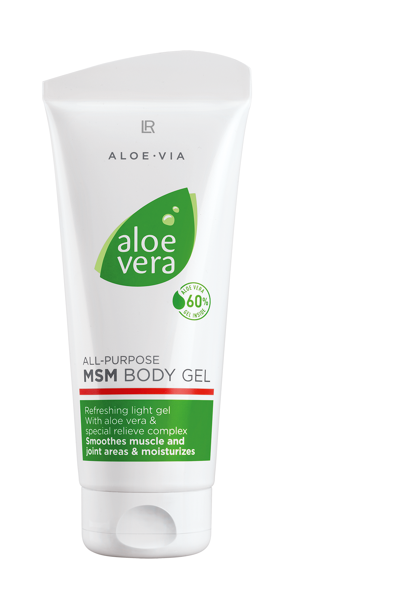

Aloe Vera MSM Body Gel
Aloe Vera Multifunctional MSM Body Gel – viilentää ja rauhoittaa rasittuneita niveliä.
Aloe Vera Multifunctional MSM Body Gel on pehmeä ja nopeasti imeytyvä geeli, jossa on 60 % Aloe veraa, sianpuolukanlehti- ja pajunkuoriuutetta.
Vartalogeelin viilentävän vaikutuksen ja arvokkaiden yrttiuutteiden ansiosta se tekee erityisen hyvää rasittuneille nivelille.
Sianpuolukanlehtiuutteella on supistavia, tulehdusta estäviä ja antibioottisia ominaisuuksia. Myös pajunkuoriuute vaikuttaa tulehdusta estävästi ja
lievittää rasittuneen ja ärtyneen ihon aiheuttamaa epämukavaa oloa.
LR ALOE VIA Special Care on erityisen hyvää tekevää ja uudistavaa rasittuneelle iholle sekä ihoärsytyksiin.
Tuotteet levittyvät suojakalvon tavoin rasittuneelle iholle, viilentävät, rauhoittavat ja edistävät uudistumista.
AINESOSAT:
Aloe Barbadensis Leaf Juice
Aqua (Water)
Dimethyl Sulfone
Glycerin
Phenoxyethanol
Propylene Glycol
Acrylates/C10-30 Alkyl Acrylate Crosspolymer
Tocopheryl Acetate
Allantoin
Sodium Hydroxide
Salix Alba (Willow) Bark Extract
Disodium EDTA
Ethylhexylglycerin
Lactic Acid
Bearberry (Arctostaphylos Uva-Ursi) Leaf Extract
Sodium Hyaluronate
Sodium Benzoate
Citric Acid
Potassium Sorbate
Käyttö
Geeliä levitetään useita kertoja päivässä laajalti hoidettaville ihoalueille.